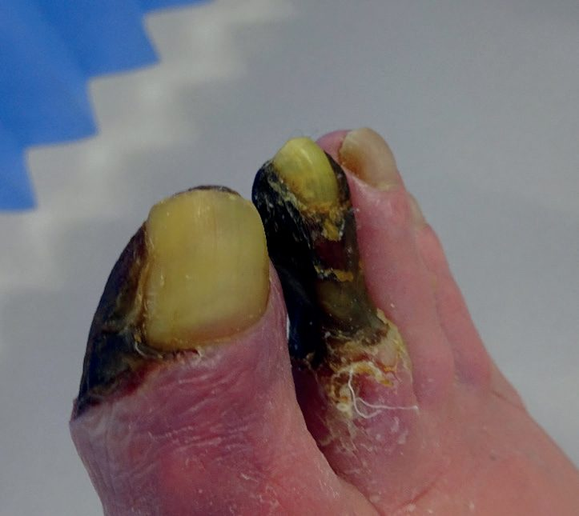
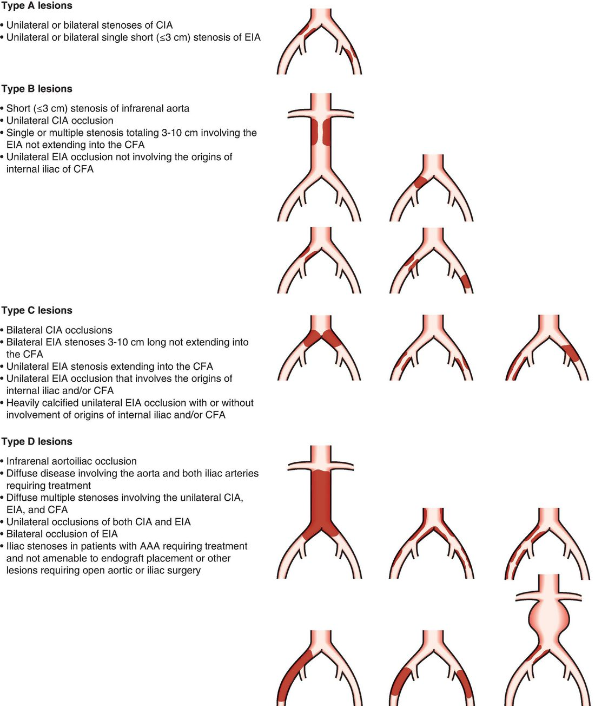
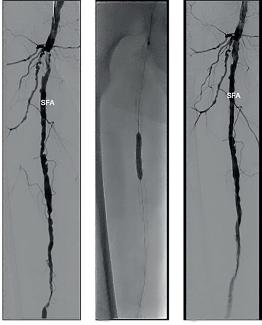
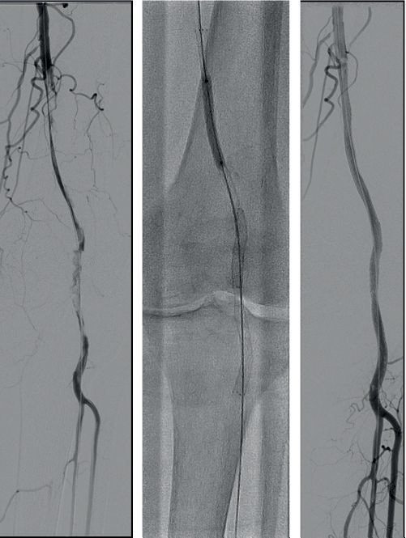

Peripheral Arterial Disease
Summary
- Peripheral arterial disease (PAD) is an obliterative, predominantly atherosclerotic process affecting the extremity arteries, most commonly the lower limbs, producing a spectrum from asymptomatic disease through intermittent claudication (IC) to chronic limb-threatening ischaemia (CLTI) and acute limb ischaemia [1].
- It affects an estimated 8.5–12 million people in the United States and carries a 5-year mortality of 32%, higher than many cancers [1].
- Diagnosis rests on history, pulse examination and the ankle–brachial index (ABI), and management combines cardiovascular risk-factor modification with revascularisation (endovascular or surgical) for lifestyle-limiting or limb-threatening disease [2].
Definition
- PAD is defined by stenosis or occlusion of the peripheral arterial system, predominantly caused by atherosclerosis and/or thromboembolic disease, producing symptoms and signs relating to the organ supplied, in the leg, claudication, rest pain and gangrene [2].
- Patients with ischaemic rest pain and/or tissue loss (ulceration/gangrene) persisting for more than two weeks, with objective evidence of arterial insufficiency, are defined as having chronic limb-threatening ischaemia (CLTI) [1][2].
- The European consensus definition of critical limb ischaemia is rest pain unrelieved by analgesia for >2 weeks and/or tissue loss in the presence of an ankle systolic pressure <50 mmHg or toe systolic pressure <30 mmHg [3].
Pathophysiology
- Atherosclerosis is a dynamic process resulting from chronic inflammation of the arterial wall: endothelial activation by proinflammatory stimuli leads to leukocyte adhesion and migration into the intima, where monocytes differentiate into macrophages that take up lipoproteins to form foam cells and fatty streaks [1].
- Vascular smooth muscle cells proliferate and secrete collagen to form a fibrous cap; ongoing apoptosis of foam cells, smooth muscle cells and macrophages produces a necrotic lipid core, and plaque rupture or superficial erosion exposes thrombogenic tissue factor, triggering coagulation and thrombosis [1].
- Calcification increases with age, diabetes mellitus (DM) and chronic kidney disease (CKD) [1].
- Arterial remodelling occurs in compensation and encroachment stages: luminal diameter is preserved by arterial enlargement until a plaque occupies 40% of the cross-sectional area, after which the lumen progressively narrows [1].
- Atherosclerotic plaque develops in predictable distributions at bifurcations and areas of fixation/angulation, most commonly the distal superficial femoral artery (SFA) at the adductor hiatus (Hunter's canal), where the artery is compressed by the adductor magnus tendon [1][4].
- Collateral vessels develop from distributing branches in response to stenosis and may maintain limb viability; symptoms worsen when disease progression outpaces collateral formation or collateral flow is reduced by decreased cardiac output or increased blood viscosity [1].
- Anaerobic muscle metabolism during exercise, when arterial inflow cannot meet oxygen demand, produces the cramp-like pain of intermittent claudication [2].
Clinical features
- Intermittent claudication is a cramp-like muscle pain that is brought on by walking, absent on taking the first step, and relieved by rest within about 5 minutes; the claudication distance varies only slightly day to day and shortens with increased workload (hills, speed, weight) or reduced oxygen delivery (anaemia, cardiorespiratory disease) [2].
- The affected muscle group is classically one anatomical level below the level of disease: superficial femoral artery disease (70% of cases) causes calf claudication, aortoiliac disease (30%) causes thigh or buttock claudication, and Leriche's syndrome is buttock claudication combined with impotence from aortoiliac occlusion [1][2].
- As disease progresses, rest pain develops, typically affecting the forefoot, worsened by elevation/lying flat (loss of gravitational perfusion) and relieved by dependency; patients often sleep with the foot hanging out of bed [1][2].
- Ulceration presents as painful erosions between the toes or shallow non-healing ulcers on the dorsum of the foot, shins or malleoli; frank gangrene is blackened and mummified, and may become wet with superadded infection [2].
- Chronic ischaemic limbs (unlike acutely ischaemic ones) tend to equilibrate with ambient temperature and retain sensation and movement; elevation reveals pallor that becomes dependent rubor ("sunset foot") on lowering the leg, and capillary refill may be prolonged to 10 seconds [2].
- Examination signs include diminished/absent pulses, arterial bruits (indicating turbulent flow/stenosis, though unreliable), hair loss, shiny atrophic skin, and slow capillary refill [2][4].
- Differential diagnoses of claudication-type pain include spinal stenosis/nerve root compression (pain relieved only by prolonged sitting), osteoarthritis, and popliteal artery entrapment (rare, pulses reduced on plantar flexion) [2][3].
- Approximately 30–60% of patients with PAD are asymptomatic [1].

Etiology
- Atherosclerosis is the most common cause of PAD; less common causes include thromboembolism, vasculitis, thromboangiitis obliterans (Buerger disease), Behçet disease, pseudoxanthoma elasticum, popliteal entrapment syndrome, cystic adventitial disease, and iliac artery endofibrosis [1].
- Modifiable risk factors mirror those for coronary artery disease: smoking, DM, hypertension and hyperlipidaemia [2].
- Smoking confers a three- to four-fold increased risk of PAD, induces endothelial dysfunction and a prothrombotic state, and smokers have a threefold risk of bypass graft failure; successful cessation improves 5-year mortality (14% vs 31% overall; 18% vs 43% in CLTI) and amputation-free survival [1].
- DM is associated with a two- to four-fold increase in PAD prevalence, and 60–70% of CLTI patients have DM; DM patients characteristically develop long-segment tibial artery occlusions with relative sparing of the pedal arteries [1].
- CKD, hypertension, and adverse lipid profiles (elevated triglycerides, low HDL, high total cholesterol:HDL ratio) are also independent risk factors [1].
- Acute limb ischaemia arises from acute thrombosis on a pre-existing atherosclerotic plaque (60% of cases, predisposed by dehydration, hypotension, malignancy, polycythaemia or prothrombotic states) or embolism (30%, 80% cardiac in origin, atrial fibrillation, myocardial infarction, ventricular aneurysm), with rarer causes including aortic dissection, trauma, iatrogenic injury and peripheral (especially popliteal) aneurysm [3].
Diagnosis
- Diagnosis of claudication is mostly clinical; the ankle–brachial pressure index (ABI) is the key bedside quantitative test, calculated as the highest ankle systolic pressure (dorsalis pedis, posterior tibial or peroneal) divided by the highest brachial systolic pressure [2].
- Normal resting ABI is 0.9–1.4; <0.9 indicates a haemodynamically significant lesion and correlates with the onset of claudication; <0.5 correlates with rest pain; <0.4 suggests CLTI/ulceration; <0.3 with tissue loss/gangrene [2][4].
- A post-exercise drop in ABI of >20% indicates flow-limiting disease even when resting ABI is normal [2].
- Falsely elevated ABI (>1.4) occurs with medial calcific sclerosis, typically in diabetics, in which case toe–brachial index (TBI, using pressures rarely affected by calcification; TBI <0.6 is abnormal) or Doppler waveform analysis is preferred [2][4].
- Hand-held continuous-wave Doppler assesses waveform (normal triphasic vs diseased bi-/monophasic signal) [2].
- Duplex Doppler ultrasound (DUS) is as accurate as angiography in experienced hands and is the first-line non-invasive imaging test, though limited by bowel gas/obesity in the aortoiliac segment and by heavy calcification [2][3].
- CT angiography (CTA) is useful as an adjunct where DUS is inadequate, particularly the aortoiliac segment, but carries risks of ionising radiation and contrast-induced nephropathy; MR angiography (MRA) avoids ionising radiation/iodinated contrast and is useful in diabetics with calcified crural disease, but is contraindicated with certain implants and carries a risk of gadolinium-induced nephrogenic systemic fibrosis in renal impairment [2].
- Digital subtraction angiography (DSA) provides dynamic flow information and can combine diagnosis with endovascular treatment, but is invasive with complication rates up to 5% (bleeding, false aneurysm, thrombosis, dissection, distal embolisation, renal dysfunction, allergic reaction) [2].
- Pulse volume recordings (PVRs) are a non-invasive flow study used to localise significant occlusion; arteriography (gold standard for vascular imaging, using CO2 contrast if renal function is poor) is indicated if PVRs suggest significant disease [4].
- General work-up includes full blood count, glucose, lipid profile, urea and electrolytes (renal function), and ECG, with echocardiography or exercise testing as indicated given the high prevalence of concomitant coronary (50%) and cerebral (25–50%) arterial disease [2].
Scoring and Severity
- The Fontaine classification grades chronic lower limb ischaemia: I asymptomatic; II intermittent claudication; III rest pain; IV ulcers/gangrene, with grades III and IV together constituting critical limb ischaemia [3].
- Single-level arterial disease usually produces intermittent claudication, while multi-level disease produces critical limb ischaemia [3].
- Atherosclerotic aortoiliac occlusive disease is classified into three anatomical types: type I (5–10% of patients), confined to the distal aorta and common iliac vessels, occurring in a relatively young group with rare limb-threatening symptoms; type II (~25%), diffuse disease predominantly of the abdominal aorta extending into the common iliac artery; and type III (~65%), widespread disease above and below the inguinal ligament, more common in older patients with diabetes, hypertension and multi-territory atherosclerosis [5].
- An ABI <0.50 predicts a two-fold higher risk of deterioration compared with ABI >0.50, and a decrease of 0.1 in ABI below 0.9 is associated with a 10% increase in relative risk of a major cardiovascular event [2].

Treatment and Management
- The two principal aims of treating claudication are prevention of major cardiovascular morbidity through risk-factor modification and symptom relief [2].
- A supervised exercise programme of at least 2 hours per week for 3 months, combined with smoking cessation, produces sustained improvement in claudication distance and cardiovascular risk [2].
- Medical therapy includes an antiplatelet agent (aspirin or clopidogrel 75 mg/day) and a statin regardless of baseline lipid level, as it stabilises atherosclerotic plaque and reduces cardiac death; beta-blockers may exacerbate claudication [2].
- First-line therapy for claudication is medical: smoking cessation (the top priority), aspirin, statin, and exercise to the point of pain to promote collateral formation [4].
- Only about a quarter of claudicants deteriorate symptomatically over their lifetime, and the risk of progression to CLTI/amputation is <5% over 5 years, so most patients do not require invasive treatment [2][3].
- Surgical indications for PAD include rest pain, ulceration or gangrene, severe lifestyle-limiting claudication despite medical therapy, and atheromatous embolisation [4].
- Percutaneous transluminal angioplasty (PTA) with or without stenting is highly successful in the aorto-iliac segment (>90%) and good in the superficial femoral segment, but is less durable in popliteal/tibial segments; complications occur in about 5% (failure, haematoma, thrombosis, distal embolisation) [2][3].
- Isolated iliac lesions are treated first with PTA/stent; if this fails, femoral-to-femoral crossover is considered [4].
- Endovascular stenting is not favoured at joint-crossing sites (common femoral, popliteal) owing to kinking risk [4].
- In CLTI, all efforts should be made to revascularise if the patient's general condition allows; a single level of disease may need treatment to relieve rest pain, whereas tissue loss requires restoration of in-line flow [3].
- There is little evidence of benefit from prostacyclin or sympathectomy (surgical or chemical) in CLTI [3].
- Acute limb ischaemia requires immediate anticoagulation (heparin) to prevent clot propagation, urgent assessment of viability (irreversible vs immediately threatened vs marginally threatened), and either amputation (non-salvageable), emergency revascularisation with fasciotomy, or continued heparinisation with imaging and thrombolysis/angioplasty/surgery depending on urgency [3].
- There is no clear superiority of thrombolysis over surgery for 30-day limb salvage or mortality in acute limb ischaemia, though surgery is used three- to five-fold more often than thrombolysis in the United States [5].

Surgeries
- Aortobifemoral bypass with a Dacron graft is the standard operation for aortoiliac occlusion, with good long-term patency (90% at 5 years) but perioperative mortality of about 5% and systemic morbidity (stroke, cardiorespiratory failure, renal injury) of about 15%; an axillobifemoral bypass is an alternative in unfit patients, though with lower patency [2].
- When performing aorto-bifemoral repair, flow to at least one internal iliac (hypogastric) artery must be preserved to prevent vasculogenic impotence and pelvic ischaemia [4].
- Isolated unilateral iliac disease can be treated with a femorofemoral crossover graft [2].
- Superficial femoral artery disease is treated with femoropopliteal bypass, ideally using autologous great saphenous vein (reversed or in situ after valve disruption); if no vein is available, a PTFE prosthetic graft is used, often with a Miller cuff/St Mary's boot to improve patency [2].
- Isolated common femoral or profunda disease can be treated with endarterectomy and patch angioplasty [2].
- Femorodistal (tibial) bypass is reserved for limb salvage in CLTI, particularly with diabetic tibial disease, requiring a vein conduit of minimum 3 mm diameter and adequate run-off; early graft failure with limb loss occurs in about 30% at 30 days [2].
- Extra-anatomic grafts (axillofemoral, femorofemoral crossover) avoid a hostile abdomen in frail, multiply-operated patients [4].
- Obturator bypass is used to reconstruct arterial anatomy through the anteromedial portion of the obturator membrane in patients with groin sepsis from infected prior grafts, intra-arterial drug abuse or irradiation, with reported 57% 5-year patency and 77% 5-year limb salvage [5].
- For prosthetic infrageniculate bypass, vein cuffs, precuffed grafts or heparin-bonded grafts (e.g., Gore Propaten using Carmeda bioactive surface technology) improve patency compared with plain PTFE [5].
- Below-knee bypasses require saphenous vein, as PTFE has reduced patency below the knee [4].
- Fasciotomy is performed for compartment syndrome following reperfusion, releasing all four compartments of the lower leg via medial and lateral incisions, left open for 5–10 days [4].
- Amputation (below-knee, BKA, or above-knee, AKA) is indicated for gangrene, large non-healing ulcers or unrelenting rest pain not amenable to revascularisation; BKA has 80% healing and 70% ambulation with 5% mortality, while AKA has 90% healing and 30% ambulation with 10% mortality [4].

Complications
- Complications of angioplasty/stenting include failure, haematoma, bleeding, thrombosis and distal embolisation [2].
- Complications of DSA include bleeding, haematoma, false aneurysm, thrombosis, arterial dissection, distal embolisation, renal dysfunction and allergic reaction, in up to 5% of procedures [2].
- Reperfusion after revascularisation of an ischaemic limb can cause compartment syndrome, lactic acidosis, hyperkalaemia and myoglobinuria/rhabdomyolysis, which can progress to renal failure if untreated [4].
- Early swelling after lower extremity bypass reflects reperfusion injury/compartment syndrome (treated with fasciotomy); late swelling suggests DVT [4].
- Technical error is the leading cause of early reversed saphenous vein graft failure, while vein atherosclerosis (intimal hyperplasia) is the leading cause of late graft failure [4].
- Acute limb ischaemia itself carries a mortality of around 20% and a limb-loss rate of around 40%, with irreversible tissue damage from severe ischaemia within 6 hours [3].
- Untreated CLTI carries a 1-year all-cause mortality of 22%, with limb loss rates of 20–40% [1].
Prognosis
- At 32%, 5-year mortality in PAD is higher than that for many cancers, reflecting the systemic burden of atherosclerosis and concomitant coronary and cerebrovascular disease [1].
- Fifty per cent of claudicants die within 10 years, chiefly from myocardial infarction or stroke, and the annual risk of a major cardiovascular event in claudicants exceeds 5% [2].
- One-third of claudication patients improve, one-third remain stable, and one-third deteriorate; 4% require intervention and 2% progress to amputation [3].
- Smoking cessation improves 5-year mortality substantially (14% vs 31% in claudicants; 18% vs 43% in CLTI) and amputation-free survival (hazard ratio 0.43) [1].
- Overall mortality after major leg amputation is 50% within 3 years [4].
References
- Sabiston Textbook of Surgery, 22nd ed., Ch. 103 Peripheral Occlusive Disease
- Bailey & Love's Short Practice of Surgery, 28th ed., Ch. 61 Arterial disorders
- Oxford Handbook of Clinical Surgery, 5th ed., Ch. 19 Peripheral vascular disease, Critical limb ischaemia
- The ABSITE Review 2022, Peripheral Arterial Disease
- Schwartz's Principles of Surgery: ABSITE and Board Review, Ch. 23 Arterial Disease